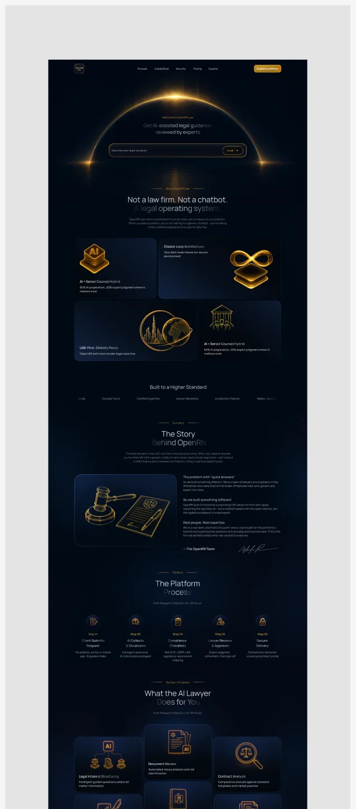
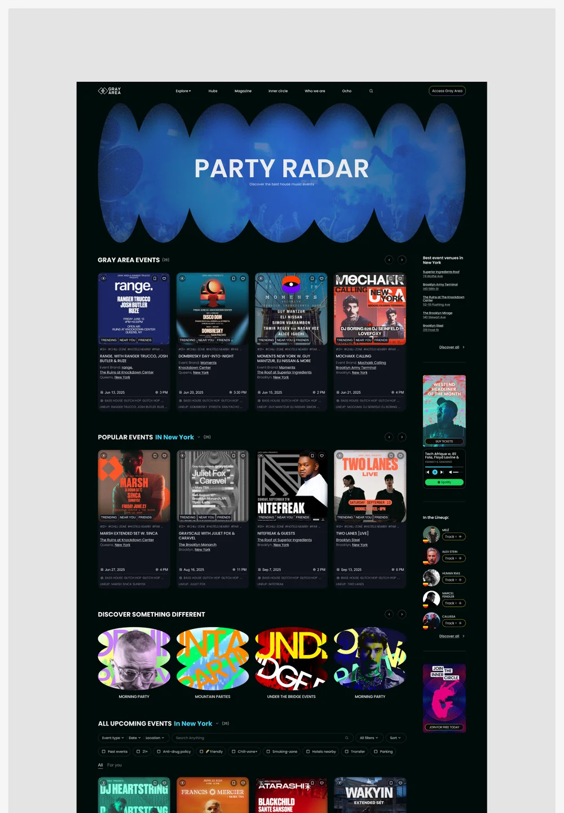
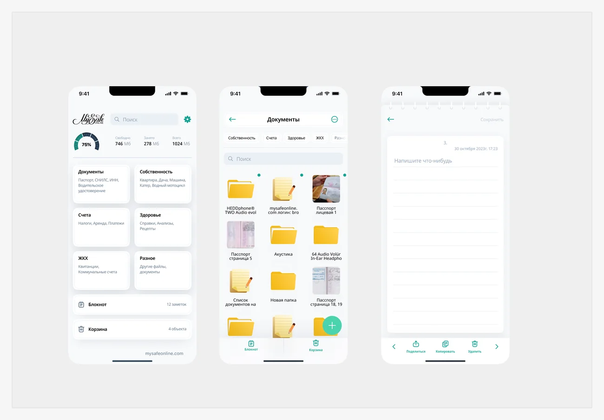

AI / Legal Tech
OpenRN
Лендинг AI-сервиса юридических консультаций. В проекте также прорабатывались чат, личный кабинет и переход к юристу.
Открыт к новым проектам · Москва / удалённо
Роман Гигола. Lead UX/UI Designer и Senior Product Designer. Соединяю исследования, продуктовую логику и визуальный дизайн — от первого сценария до запуска.

Избранные работы / 2024—2026
Кейс 01 / Добро.рф · 2026
Добро.рф — экосистема помощи и волонтёрства. В этом кейсе — сервис пожертвований: люди поддерживают сборы, а НКО создают их.
Помочь человеку выбрать один или несколько сборов, проверить сумму и уверенно перейти к оплате.
Вёл UX/UI, исследовательский план, проектирование сценариев и дизайн-ревью вместе с командой.
Сценарный тест интерактивного прототипа до шага оплаты без списания средств.
Переработал связь между выбором сбора, суммой и корзиной.
Результат сравнительного опроса трёх макетов по вопросу об удобстве.
Для Pathway я подготовил исследовательский вопрос, задания на мультидонат и изменение суммы, критерии успеха и требования к записи прохождений. После теста сравнили три варианта корзины; вариант с видимым составом сборов получил больше всего ответов об удобстве.

Продумал одиночный и множественный донат, развилки, возвраты и исправление суммы до оплаты.
Показал выбранные сборы и итоговую сумму рядом с основным действием, чтобы пользователь контролировал решение.
Развивал визуальные основы и компоненты платформы вместе с командой, сохраняя связь с экосистемой Добро.рф.

+0,4 процентного пункта
+0,2 процентного пункта
Сравнение до и после внедрения изменений на пилотной аудитории. Платформа опубликована в ограниченном доступе для волонтёров и проверенных доноров партнёрских фондов.
Посмотреть исходные макеты в FigmaКейс 02 / Fanza Fusion · B2B SaaS
CRM для организаторов музыкальных ивентов объединяет события, артистов, билеты, маркетинг, финансы и партнёрства. У команды появляется общая картина: что происходит с событием, кто отвечает и какие задачи требуют внимания.
Спроектировал общую структуру модулей и сценарии с учётом прав доступа каждой роли.
 Открыть экран ↗
Открыть экран ↗UI / Избранные экраны
Дополнительные примеры визуального дизайна и адаптивных решений.

Лендинг AI-сервиса юридических консультаций. В проекте также прорабатывались чат, личный кабинет и переход к юристу.

Редизайн контентной платформы: события, подборки и способы исследования музыкальной сцены.

Визуальное направление и адаптация страницы под десктоп, планшет и мобильный экран.

Хранение и поиск документов, доступы и роли в мобильном рабочем сценарии.
Обо мне
6+ лет проектирую веб-сервисы и мобильные продукты. Руководил командой до шести дизайнеров, при этом продолжаю самостоятельно разбирать сложные сценарии, проверять гипотезы и сопровождать реализацию.
Резюме в PDF